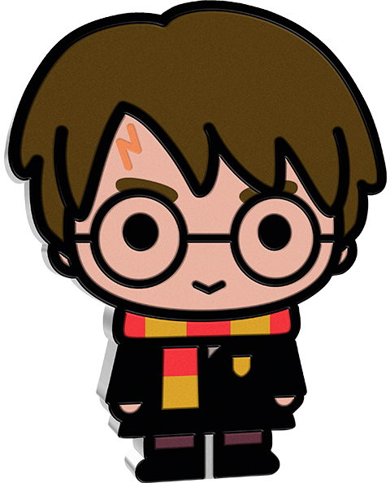
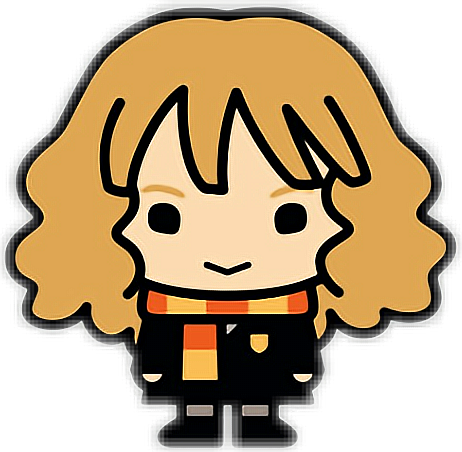
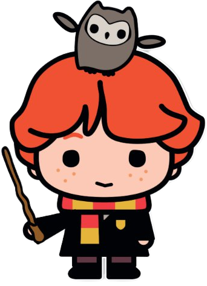
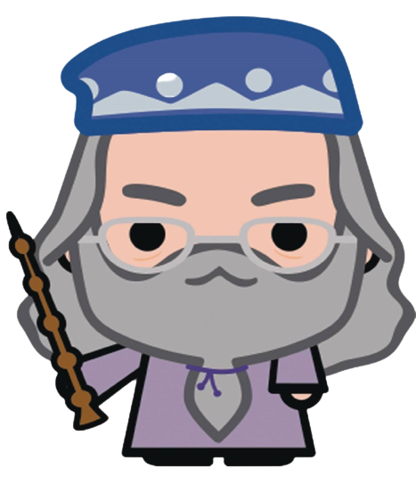
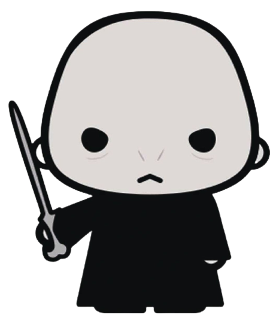
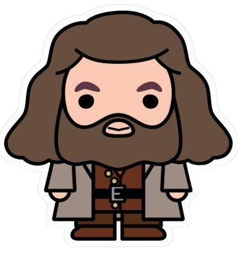

|  | Harry Potter is the Boy Who Lived, the Chosen One, the hero of the Wizarding world. He grew up with Muggles, and then came to Hogwarts where he faced dangers and terrors beyond his years. He, along with his friends Hermione Granger, Ron Weasley and Neville Longbottom, destroyed Voldemort’s Horcruxes. Harry faced Voldemort at the end of a climactic battle in Hogwarts castle and defeated him. |
|  | Resourceful, principled and brilliant, Hermione Jean Granger is easily the brightest witch of her generation. She, along with Ron Weasley, is one of Harry Potter’s closest friends. She is also Muggle-born (her parents were dentists), and so is a living, breathing example of the fallacy of pureblood wizard supremacy. |
|  | Ron Weasley is Harry Potter’s best friend and the youngest son of Molly and Arthur Weasley. The story of Ron’s life is one of being overshadowed by his family and friends, yet it is Ron’s heart and humor that have solidified his friendships and given those around him the support they needed to carry through . Tall and gangly with bright red hair and freckles , Ron has a way of keeping things lighthearted that makes him well-liked, despite occasional bouts of stress. |
|  | Albus Dumbledore was the Headmaster of Hogwarts for over thirty years, a time period that encompassed both of Voldemort’s attempts to take over the Wizarding world. Considered to be the most powerful wizard of his time, Dumbledore was awarded the Order of Merlin, First Class, and was the Supreme Mugwump of the International Confederation of Wizards as well as the Chief Warlock of the Wizengamot. |
|  | Lord Voldemort, born Tom Marvolo Riddle, was the son of Merope Gaunt (a descendent of Salazar Slytherin) and Tom Riddle, a handsome, wealthy Muggle from Little Hangleton whom Merope ensnared with a love potion. When her husband found out she was a witch, he abandoned her while she was pregnant. Tom’s mother died shortly after giving birth to him one December 31, living just long enough to name him Tom Riddle, after his father and Marvolo, after his grandfather. Tom Marvolo Riddle, the half-blood orphan, was to transform himself into Lord Voldemort and take control of the Wizarding world by manipulating the festering relationship between pureblood and Muggle-born wizards. |
|  | Rubeus Hagrid is a half-giant with shaggy hair and a “wild, tangled beard” who serves as the Keeper of Keys and Grounds, Gamekeeper, and Care of Magical Creatures professor at Hogwarts. He is excessively fond of “interesting creatures” — that anyone else would call fearsome monsters. Hagrid’s appearance is very intimidating, but his disposition is kind; in fact, his soft heart tends to lead him to cry rather a lot. He lives in a hut on the Hogwarts grounds near the Forbidden Forest with his pet boarhound, Fang |